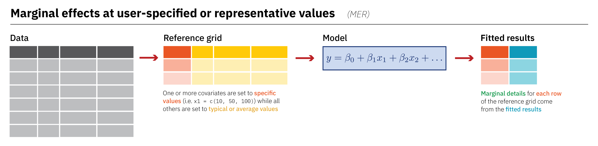

Causal inference
with conjoints
Sliders and switches


Parameter | Coefficient | SE | 95% CI | t(329) | p
-----------------------------------------------------------------------------------
(Intercept) | -4013.18 | 586.25 | [-5166.44, -2859.92] | -6.85 | < .001
flipper len | 40.61 | 3.08 | [ 34.55, 46.66] | 13.19 | < .001
species [Chinstrap] | -205.38 | 57.57 | [ -318.62, -92.13] | -3.57 | < .001
species [Gentoo] | 284.52 | 95.43 | [ 96.79, 472.25] | 2.98 | 0.003 {marginaleffects}
Quit working with raw coefficients!
Arel-Bundock, Vincent, Noah Greifer, and Andrew Heiss. 2024. “How to Interpret Statistical Models Using marginaleffects for R and Python.” Journal of Statistical Software 111 (9): 1–32. https://doi.org/10.18637/jss.v111.i09.
Arel-Bundock, Vincent. 2026. Model to Meaning: How to Interpret Statistical Models with R and Python. A Chapman & Hall Book. CRC Press, Taylor & Francis Group. https://doi.org/10.1201/9781003560333, https://marginaleffects.com/

- Quantity: What is the quantity of interest? Do we want to report a prediction or a function of predictions (average, difference, ratio, derivative, etc.)?
- Grid: What predictor values are we interested in? Do we want to report estimates for the units in our dataset, or for hypothetical or representative individuals?
- Aggregation: Do we report estimates for every observation in the grid or a global summary?
- Uncertainty: How do we quantify uncertainty about our estimates?
- Test: Which (non-)linear hypothesis or equivalence tests do we conduct?
Parameter | Coefficient | SE | 95% CI | t(331) | p
---------------------------------------------------------------------------
(Intercept) | -5872.09 | 310.29 | [-6482.47, -5261.71] | -18.92 | < .001
flipper len | 50.15 | 1.54 | [ 47.12, 53.18] | 32.56 | < .001Parameter | Coefficient | SE | 95% CI | t(329) | p
-----------------------------------------------------------------------------------
(Intercept) | -4013.18 | 586.25 | [-5166.44, -2859.92] | -6.85 | < .001
flipper len | 40.61 | 3.08 | [ 34.55, 46.66] | 13.19 | < .001
species [Chinstrap] | -205.38 | 57.57 | [ -318.62, -92.13] | -3.57 | < .001
species [Gentoo] | 284.52 | 95.43 | [ 96.79, 472.25] | 2.98 | 0.003 Parameter | Coefficient | SE | 95% CI | t(327) | p
--------------------------------------------------------------------------------------------------
(Intercept) | -2508.09 | 892.41 | [-4263.68, -752.49] | -2.81 | 0.005
flipper len | 32.69 | 4.69 | [ 23.46, 41.92] | 6.97 | < .001
species [Chinstrap] | -529.11 | 1525.11 | [-3529.37, 2471.16] | -0.35 | 0.729
species [Gentoo] | -4166.12 | 1431.58 | [-6982.39, -1349.84] | -2.91 | 0.004
flipper len × species [Chinstrap] | 1.88 | 7.86 | [ -13.59, 17.36] | 0.24 | 0.811
flipper len × species [Gentoo] | 21.48 | 6.97 | [ 7.77, 35.18] | 3.08 | 0.002
Term Contrast species Estimate Std. Error z Pr(>|z|) S 2.5 % 97.5 %
flipper_len +1 Adelie 32.7 4.69 6.967 < 0.001 38.2 23.5 41.9
flipper_len +1 Chinstrap 34.6 6.31 5.478 < 0.001 24.5 22.2 46.9
flipper_len +1 Gentoo 54.2 5.15 10.516 < 0.001 83.5 44.1 64.3
species Chinstrap - Adelie Adelie -170.9 65.04 -2.627 0.00861 6.9 -298.3 -43.4
species Gentoo - Adelie Adelie -83.4 146.97 -0.567 0.57052 0.8 -371.4 204.7
species Chinstrap - Adelie Chinstrap -160.1 60.39 -2.651 0.00803 7.0 -278.4 -41.7
species Gentoo - Adelie Chinstrap 39.5 122.28 0.323 0.74675 0.4 -200.2 279.2
species Chinstrap - Adelie Gentoo -119.7 193.37 -0.619 0.53580 0.9 -498.7 259.3
species Gentoo - Adelie Gentoo 499.3 135.18 3.694 < 0.001 12.1 234.4 764.3
Type: responseWhat are marginal means?
OLS with categorical predictors
Predictions across balanced grid
| Sex | ||
|---|---|---|
| Species | Female | Male |
| Adelie | 3372 | 4040 |
| Chinstrap | 3399 | 4067 |
| Gentoo | 4750 | 5418 |
Means in the margins
| Sex | |||
|---|---|---|---|
| Species | Female | Male | Marginal mean |
| Adelie | 3372 | 4040 | 3706 (3372 + 4040) / 2 |
| Chinstrap | 3399 | 4067 | 3733 (3399 + 4067) / 2 |
| Gentoo | 4750 | 5418 | 5084 (4750 + 5418) / 2 |
| Marginal mean | 3841 (3372 + 3399 + 4750) / 3 |
4508 (4040 + 4067 + 5418) / 3 |
|
For the sex-specific averages, all the between-species variation is “marginalized out” or accounted for; for the species-specific averages, all the between-sex variation is similarly marginalized out.
Differences in marginal means
| Sex | ||||
|---|---|---|---|---|
| Species | Female | Male | Marginal mean | ∆ |
| Adelie | 3372 | 4040 | 3706 (3372 + 4040) / 2 |
— |
| Chinstrap | 3399 | 4067 | 3733 (3399 + 4067) / 2 |
27 Chinstrap−Adelie |
| Gentoo | 4750 | 5418 | 5084 (4750 + 5418) / 2 |
1378 Gentoo−Adelie |
| Marginal mean | 3841 (3372 + 3399 + 4750) / 3 |
4508 (4040 + 4067 + 5418) / 3 |
||
| ∆ | — | 668 Male−Female |
||
Coefficients and predictions
Parameter | Coefficient | SE | 95% CI | t(329) | p
--------------------------------------------------------------------------------
(Intercept) | 3372.39 | 31.43 | [3310.56, 3434.21] | 107.31 | < .001
species [Chinstrap] | 26.92 | 46.48 | [ -64.52, 118.37] | 0.58 | 0.563
species [Gentoo] | 1377.86 | 39.10 | [1300.93, 1454.78] | 35.24 | < .001
sex [male] | 667.56 | 34.70 | [ 599.29, 735.82] | 19.24 | < .001
species Estimate Std. Error z Pr(>|z|) S 2.5 % 97.5 %
Adelie 3706 26.2 141.4 <0.001 Inf 3655 3758
Chinstrap 3733 38.4 97.2 <0.001 Inf 3658 3808
Gentoo 5084 29.0 175.1 <0.001 Inf 5027 5141
Type: response
sex Estimate Std. Error z Pr(>|z|) S 2.5 % 97.5 %
female 3841 25.3 152 <0.001 Inf 3791 3890
male 4508 25.1 180 <0.001 Inf 4459 4557
Type: response